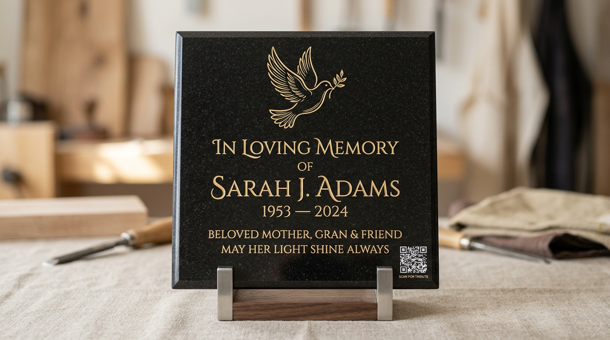
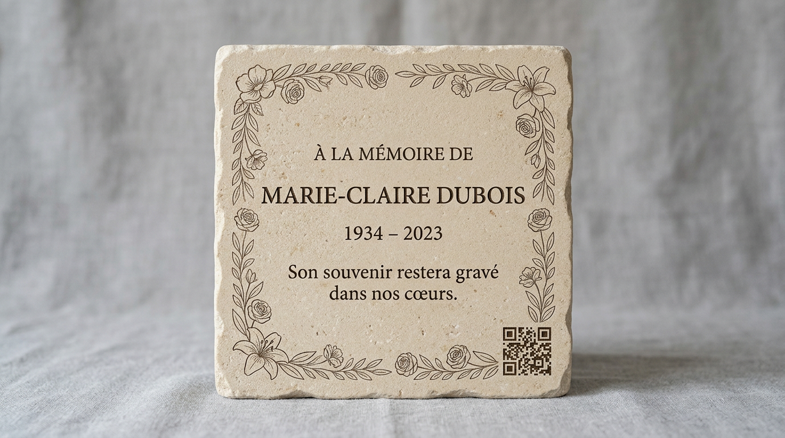
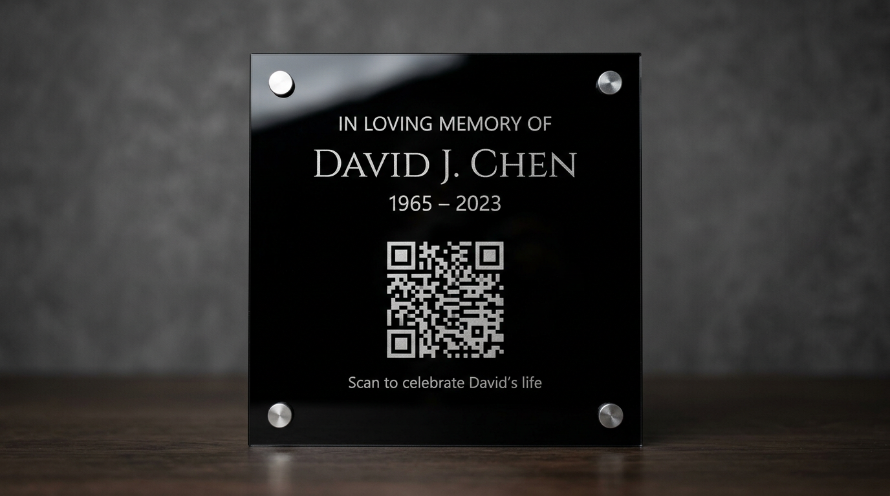
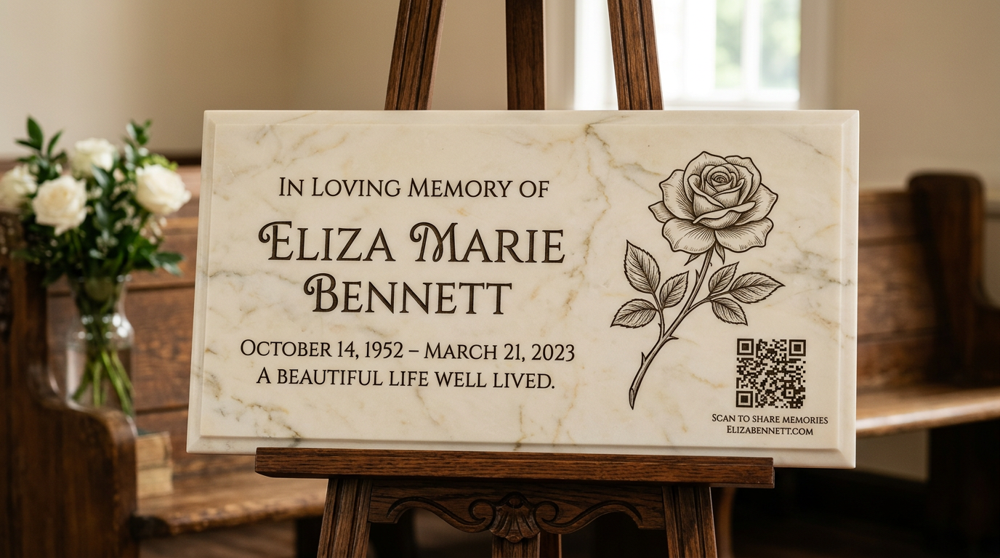

Des plaques esthétiques, gravées avec soin, pour traverser le temps
Ici : plaques gravées avec QR vers la page hommage — matériaux, personnalisation et exemples visuels.
Un design sobre, une gravure précise, et un lien éternel vers la mémoire de l’être aimé.
Ce que comprend notre offre
Chaque plaque intègre un QR code discret mais lisible, menant directement à une page hommage personnalisée (galerie photo, texte, vidéo…). Vous choisissez la forme, la matière, le style de gravure et les éléments visuels. Nous nous occupons de la cohérence avec votre page en ligne.
- Plusieurs matériaux (granit, plexiglas, pierre naturelle, etc.)
- QR résistant aux intempéries, gravé avec précision
- Citation, photo, motif floral, bordure — sur mesure
- Format horizontal ou vertical, chevalet inclus si souhaité
Personnalisation avancée
Chaque QR et chaque décor peuvent évoquer ce qui comptait pour la personne aimée : une colombe, une guitare, un ballon, une croix discrète… Nous créons un design unique à partir de ce que vous nous racontez. Notre engagement : faire de chaque plaque un objet porteur de sens.
Quelques réalisations récentes
Quatre exemples de styles possibles — photographies de démonstration. Chaque plaque réelle est conçue sur mesure avec vous.




À noter
Les plaques sont produites en partenariat avec un artisan graveur de confiance. Les tarifs varient selon la matière, le format et le degré de personnalisation.
- Livraison dans toute la France
- Délai moyen : 10 à 15 jours ouvrés (indicatif)
Voir une maquette en exemple →
Demander un devis pour une plaque personnalisée
Voir un exemple de page hommage · Parcours complet d’une famille